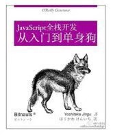

何浩毅
男，一个20应届生！一直潜心研究web前端技术，一直在自学以及询问大牛们一些问题的解决以及入手方向。大家也亲切的叫我“小毅”。
学习前端因为本专业，也是掌握知识最多的一个行业。入了这一行，就深深的喜欢上它。我喜欢一句话“冥冥中该来则来，无处可逃”。

每次有人问起如何做好一个前端时，我想说的是也是我要遵守的，一是“代码”，一定要简单，布局要合理。二是“保持好奇心”，我相信在前端中最重要的属性之一就是好奇心，新的工具、插件、技术和语言几乎每天都会出现。重要的是要对所有的新事物保持开放的态度，并努力去探索和理解它们。而与此同时，前端开发的美妙之处在于它的发展速度非常快。这意味着你可以很快成为专家，但你的技能也会很快过时。
丰富自己的开发技能
前端开发以及与之相关的一切都只是一项技能，无论你相信与否，都是可以学习的。为了成长，你需要对自己投资。我不是说在昂贵的课程、研讨会或书籍上花钱，我更想投资你的时间。没有捷径可走，研究表明，掌握一项技能需要大约10000个小时，每周练习40小时的话，这大约需要4年的时间。准备好熬夜浏览其他网站，尝试新的插件和框架，阅读web开发博客，收听播客，以及咀嚼成千上万的推文。
因为说总是那么简单
小贴士: 一周安排一点时间去提高自己的开发技能。我知道，如果你的老板不支持你，这可能会更加困难，但要准备好把你的空闲时间投入到你的事业中去。